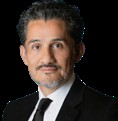

La banca patrimonial y privada nacio en la Europa del siglo XIX, cuando casas bancarias familiares como Rothschild, Baring Brothers y Brown Brothers Harriman empezaron a ofrecer servicios personalizados a aristocratas, grandes comerciantes e industriales, con la funcion original de preservar y transferir riqueza en un mundo sin regulacion financiera ni tecnologia sofisticada. En Estados Unidos el modelo se transformo con la era industrial: Rockefeller, Carnegie, Vanderbilt y J.P. Morgan ya operaban oficinas familiares, fideicomisos testamentarios, fundaciones privadas e inversiones diversificadas. Despues de la posguerra, los bancos privados de Suiza, Reino Unido y Luxemburgo formalizaron la banca privada como area diferenciada, y en los ochenta, con el crecimiento de los High Net Worth Individuals en tecnologia, energia y finanzas, surgio el enfoque de Private Wealth Management: mas estrategico, integral y orientado a objetivos globales.
En Mexico y America Latina el desarrollo ha sido mas reciente, influido por la internacionalizacion financiera, la profesionalizacion de las empresas familiares y la necesidad de blindar patrimonios ante volatilidades politicas, cambiarias y fiscales. Las familias empresarias de la region enfrentan hoy los mismos desafios que un Rockefeller moderno: preservar el capital, enfrentar transiciones generacionales, proteger activos en entornos hostiles y maximizar el impacto de sus inversiones. En un entorno donde los clientes saben mas, preguntan mas y esperan mas, los bancos ya no pueden darse el lujo de tener asesores desactualizados, sin dominio de mercados, fiscalidad internacional o estructuras legales sofisticadas: cada error y cada omision cuesta millones y erosiona la confianza.
Private Wealth Management Executive Program forma a los nuevos arquitectos de grandes patrimonios: banqueros, asesores, family offices y los propios HNWI y UHNWI. El objetivo general es capacitar profesionales en la gestion estrategica del patrimonio, capaces de estructurar, proteger y optimizar grandes fortunas familiares y empresariales mediante conocimientos avanzados en inversiones, fiscalidad internacional, estructuras fiduciarias, gobierno familiar, filantropia, mercados privados y estrategias multigeneracionales. Esta disenado para servir a los dos vertices del ecosistema patrimonial, quienes gestionan la riqueza y quienes la poseen, y se imparte en formato hibrido con sesiones presenciales y virtual live a cargo de banqueros privados en activo, fiscalistas, gestores de activos, reguladores y operadores de mercados publicos y privados.
144 sesiones en vivo, 360 horas en total.
Head de Wealth Management para HSBC Mexico y Consejero en el Consejo de Administracion de la Operadora de Fondos de HSBC. Es Licenciado en Ciencias Politicas por la Universidad Catolica Argentina y cuenta con un MBA con especializacion en Finanzas por la Universidad San Pablo CEU en Madrid, Espana. Cuenta con mas de 20 anos de experiencia en el sector financiero tanto en America como en Europa. Su carrera se ha centrado principalmente en casas de bolsa, bancos y aseguradoras. Ha sido banquero y posteriormente se ha destacado en diversas areas como Producto, Estrategia, Distribucion y Recursos Humanos dentro de los negocios de Wealth Management, Asset Management y Seguros. Actualmente se desempena como Head de Wealth Management para HSBC Mexico y es Consejero dentro del Consejo de Administracion de la Operadora de Fondos de HSBC.
Didier Mena Campos es un profesional con mas de 30 anos de experiencia en el sector financiero, especializado en banca de inversion, gestion patrimonial, estrategia financiera y administracion de riesgos. Ha ocupado cargos directivos en instituciones financieras nacionales e internacionales, desempenandose en areas de finanzas corporativas, mercados de capitales, fusiones y adquisiciones, inclusion financiera y transformacion digital. Cuenta con una licenciatura en Economia por el Instituto Tecnologico Autonomo de Mexico (ITAM), donde se graduo con honores. Realizo una Maestria en Administracion de Empresas (MBA) en Boston University, patrocinado por Bancomer, y ha complementado su formacion con programas ejecutivos en Harvard Business School e IPADE. Entre sus posiciones destacadas, fue Vicepresidente de Administracion y Finanzas de Banco Santander Mexico (2022-2023), donde estuvo a cargo de operaciones, tecnologia, recursos humanos, estrategia y finanzas. Previamente, fue CFO y CIO de Santander Mexico (2016-2022), liderando la estrategia financiera y la relacion con inversionistas. Tambien ha sido Managing Director en Credit Suisse, dirigiendo la division de instituciones financieras para America Latina, y ha ocupado roles de liderazgo en otras entidades como Financiera Independencia, Oro Negro y Navix de Mexico. Ademas de su labor en el sector financiero, ha impartido cursos en el ITAM, participando en programas de educacion financiera. Tambien ha sido Co-Presidente de la Comision de Finanzas de la Asociacion de Bancos de Mexico y miembro del Latin X and Hispanic Leadership Council de Boston University.
Mariana Garza es Consultor Externo enfocada en desarrollo de negocio para Intermediarios y Family Offices en Mexico. Tiene 20 anos de experiencia en el medio financiero en el area de Desarrollo de Productos y Ventas. Anteriormente, fue Director en el segmento Intermediarios y Family Offices en Compass Mexico, trabajo en Lorant MMS como Asociado de Ventas para Corporativos, en Estrategias de CI Banco como Director en Desarrollo de Producto y de Negocios y en Mexder como broker de derivados. La mayor parte de su experiencia en el medio financiero fue en BlackRock, en el equipo de Ventas en el Segmento Intermediarios y Family Offices en Mexico. Mariana es Licenciada en Relaciones Internacionales por la Universidad Iberoamericana.
El Ing. Jose Maria de la Torre Verea nacio en la Ciudad de Mexico el 20 de febrero de 1969. Realizo sus estudios universitarios en el Instituto Tecnologico de Monterrey donde obtuvo el titulo de Ingeniero Industrial y de Sistemas. Continuo su educacion en el Massachusetts Institute of Technology (MIT) donde consiguio el titulo de Maestro en Administracion de Empresas con concentracion en Ingenieria Financiera. Posteriormente recibio el titulo de Maestro en Artes de la Yale University por completar satisfactoriamente los estudios de la Maestria en Economia Internacional y para el Desarrollo. Comenzo su carrera profesional en Wall Street trabajando para el banco norteamericano J. P. Morgan en donde alcanzo el puesto de Vicepresidente de Estrategia de Mercados. A su regreso a Mexico comenzo a laborar para la firma holandesa ING Asset Management; en esa empresa fue el responsable de la administracion de los fondos de renta fija. Posteriormente fue contratado por BBVA Bancomer en donde se desempeno hasta 2012. En esa institucion ocupo dos puestos relevantes: (1) Director de Estrategia de Mercados para America Latina; y (2) Director de Promocion de Productos Estructurados con Derivados de Acciones e Inversiones Alternativas. En esta ultima posicion participo activamente en las colocaciones de Certificados de Capital de Desarrollo (CECADE) y de Fideicomisos de Inversion en Bienes Raices (FIBRA). Entre 2012 y 2013, el Ing. de la Torre laboro como Consejero en Inversiones Patrimoniales para la institucion norteamericana Citi Private Bank. Por designacion del Director General del ISSSTE y el Secretario de Hacienda y Credito Publico, el Ing. de la Torre consumo uno de sus logros profesionales mas relevantes: ejercer un cargo en el Servicio Publico. Estuvo a cargo del Fondo Nacional de Pensiones de los Trabajadores al Servicio del Estado. Sus logros principales como Vocal Ejecutivo de PENSIONISSSTE son los siguientes: (1) ubicar a tres de las cuatro SIEFORE en primero, segundo o tercer lugar de acuerdo con el Indice de Rendimiento Neto de la CONSAR durante mas del 90% de su gestion; (2) aumentar los activos administrados de 105 mil millones de pesos a 170 mil millones de pesos; y (3) desarrollar una fuerza comercial que invirtio la tendencia de los traspasos (desde 16 mil millones de pesos en contra hasta 4 mil millones de pesos a favor). El Ing. de la Torre concluyo su labor como servidor publico en abril del 2017 y se incorporo a Planigrupo LATAM, uno de los consorcios mas importantes de America Latina en la industria de los bienes raices. Durante los nueve meses que presto sus servicios ocupo el cargo de Asesor del Director General. En este rol, el Ing. de la Torre estuvo a cargo de la recompra de los Certificados de Capital de Desarrollo emitidos por esa sociedad en 2012 y ademas dirigio la oferta publica de acciones en Mexico y diversos mercados internacionales. Durante la primera mitad del 2019, el Ing. de la Torre laboro en Casa de Bolsa Bursametrica como Director de Ventas a Clientes Institucionales. Esta institucion es una boutique dedicada al financiamiento de proyectos de infraestructura. Actualmente, el Ing. de la Torre labora en Grupo Financiero BANORTE como Director de Analitica.
Fernando Buendia comenzo su solida formacion academica en la Universidad Nacional Autonoma de Mexico (UNAM), donde obtuvo su titulo en Economia entre los anos 1985 y 1989. Su interes por el analisis y la modelizacion economica lo llevo a continuar sus estudios en el Instituto Tecnologico Autonomo de Mexico (ITAM), donde realizo un posgrado en Econometria entre 1990 y 1992. Posteriormente, consolido su especializacion obteniendo una Maestria en Negocios Internacionales en el ITAM entre 1993 y 1995. A lo largo de mas de tres decadas, ha desempenado roles clave en el sector financiero, destacandose por su liderazgo y vision estrategica. Su carrera comenzo en Probursa, donde fue jefe de Estrategia de Inversion desde 1991 hasta 1995. Su capacidad para gestionar inversiones lo llevo a BBVA, donde ocupo multiples posiciones de alta responsabilidad: dirigio el area de Asset Management en Mexico entre 1995 y 1999, y para todo LATAM de 1999 a 2002, asi como la division de Mercados de Tesoreria y Asset Management para todo LATAM desde 2002 hasta 2005. En 2009, se unio a Credit Suisse Mexico como Director de Inversiones (CIO), donde permanecio hasta 2018, gestionando a los clientes UHNW. Posteriormente, se incorporo a Santander Mexico, primero como lider para dirigir el area de clientes UHNW (Ultra High Net Worth) de 2018 a 2020, y luego como lider de estrategia de Inversiones, Productos y Credito en el area de Wealth Management, cargo que ha desempenado desde 2020 hasta 2024. Su extensa experiencia y profundo conocimiento del mercado financiero lo han convertido en un referente en la gestion de inversiones y estrategias financieras, aportando valor y direccion en cada una de las instituciones donde ha colaborado.
Actuario por la Universidad Anahuac del Norte, generacion 90-94 con tesis "Pronostico de corto plazo de tipo de cambio basado en cadenas de Markov". Maestria en metodos matematicos aplicados en finanzas, tambien por la Universidad Anahuac del Norte (1995-1997). Con experiencia profesional en Mexico y el extranjero de mas de 27 anos, en 3 grandes areas de Mercados: trading, de tasas de interes, mercado de dinero, bonos corporativos locales y extranjeros y FX: en NAFINSA (1993-1996), ING Bank (1996-1998) y Deutsche Bank NY (1998-1999) y DB Mexico (1999-2000). Estructurador, en Citibank Mexico llevando el libro de volatilidad de FX, atendiendo clientes corporativos e institucionales en cobertura de commodities, riesgos de monedas y tasas de interes, ademas de inversiones estructuradas, con Notas, CDS, warrants, entre otros. Ventas, como responsable del area de Ventas a los clientes corporativos en Merrill Lynch Mexico (2007-2010), Banamex (2010-2013) y BBVA Mexico (2013-2019). Actualmente se desempena como Banquero Privado dentro de la Ultra High Net Worth (UHN) donde lleva la celula que atiende a los Family Offices en Mexico.

Alejandro cuenta con mas de 30 anos de experiencia como uno de los asesores fiscales mas reconocidos en el mercado, con un enfoque especial en la industria financiera. Alejandro ha brindado asesoria fiscal en numerosas transacciones de fusiones y adquisiciones, asi como a diversos fondos de capital privado en la estructuracion, inversion y salida de fondos. Ademas, ha participado activamente en la mayoria de las ofertas publicas iniciales (IPOs) de diferentes clases de activos tanto en Mexico como en el extranjero, y proporciona asesoria continua en planeacion patrimonial a familias mexicanas. Participo en la emision de los unicos dos SPACS en el mercado mexicano, asi como en sus respectivas inversiones iniciales. Represento a Apollo Global Management en el DIP financing para Aeromexico. Represento a BlackRock en la adquisicion del gas pipeline Los Ramones. Represento a Innovasport en la adquisicion de una cadena de tiendas deportivas con presencia en varios paises en la region andina. Represento a la FIFA en el establecimiento de sus operaciones en Mexico para la organizacion del Mundial de Futbol en 2026. Represento a varias casas de bolsa extranjeras en la colocacion de ADS en el mercado de NYSE por parte de Corporacion Inmobiliaria Vesta. Rankeado como "Leading Partner" en Legal 500, 2025. Reconocido como "Abogado Fiscal del Ano", Legal 500 Awards, 2023. Rankeado en Primer Nivel en Chambers Latam, 2025. Rankeado en Primer Nivel en Chambers Global, 2024. Rankeado como "Leading Individual" en Legal 500, 2024. Rankeado como "Highly Regarded" en ITR World Tax, 2024.
Antonio Castano cuenta con una amplia experiencia en mercados financieros y banca de inversion, tanto en Mexico como en el extranjero. Actualmente, Antonio es el Director de Tesoreria. Anteriormente, ocupo diversas posiciones en BBVA Mexico, entre las que destacan haber sido el responsable de FX y de Credit Markets. Previo a unirse a BBVA, Antonio fue el Director General Adjunto Financiero de Nacional Financiera, supervisando todas las actividades de inversion y financiamiento. Adicionalmente, ha ocupado diversos cargos en UBS, la Secretaria de Hacienda y Credito Publico, Valores Finamex y Operadora de Bolsa. Ha sido miembro del consejo de Operadora de Fondos Nafinsa, MacMa, Medica Sur y el Fondo Mexico, entre otros. Antonio es egresado de la Licenciatura en Actuaria (mencion honorifica) del Instituto Tecnologico Autonomo de Mexico (ITAM) y cuenta con una maestria en Administracion de Empresas (MBA) por la Universidad de Stanford. Ha impartido catedra en el ITAM, la Universidad Anahuac y la UNAM.
Con mas de 35 anos, Jose Oriol Bosch Par es un destacado ejecutivo en el sector financiero global. Nacido en Espana, llego a Mexico a los 15 anos y ha desarrollado la mayor parte de su carrera en el pais. Es licenciado en Administracion y Finanzas por la Universidad Panamericana. Inicio su trayectoria profesional en 1987 en Inverlat Casa de Bolsa y posteriormente en Citibank Mexico. En 1992, se unio a J.P. Morgan, donde ocupo diversos cargos tanto en Mexico como en Nueva York, incluyendo el de Director General Adjunto y Director de Mercados Financieros para J.P. Morgan Banco, asi como Director General de J.P. Morgan Casa de Bolsa. El 1 de enero de 2015, Bosch Par asumio el cargo de Director General del Grupo Bolsa Mexicana de Valores (BMV), posicion que ocupo hasta mayo de 2024. Durante su gestion, la BMV experimento un crecimiento significativo en el financiamiento a traves de emisiones de deuda, aunque enfrento desafios en el mercado de capitales, como la ausencia de Ofertas Publicas Iniciales (OPIs) desde 2017. A lo largo de su carrera, Bosch Par ha sido reconocido por su liderazgo y contribuciones al desarrollo del mercado financiero mexicano, participando activamente en diversas organizaciones y promoviendo la importancia de la gobernanza corporativa y la transparencia en el sector.
El Prof. Luis Seco es el Director del Programa de Finanzas Matematicas, Profesor de Matematicas en la Universidad de Toronto y Director de Risklab, un laboratorio de investigacion universitario establecido en 1996, que realiza investigaciones en finanzas cuantitativas, con un enfoque especial en la gestion de activos. En octubre de 2007, RiskLab gano el premio Synergy Award for Innovation de NSERC (Consejo de Investigacion de Ciencias Naturales e Ingenieria de Canada). El premio fue entregado por el Dr. Colin Carrie, Secretario Parlamentario del Ministro de Industria, en nombre del Honorable Jim Prentice, Ministro de Industria y Ministro responsable del Consejo de Investigacion de Ciencias Naturales e Ingenieria de Canada (NSERC), y por la Dra. Suzanne Fortier, presidenta de NSERC. Fue el fundador y Director General de Sigma Analysis & Management Ltd., una empresa de gestion de activos que invirtio dinero institucional en productos de fondos de cobertura durante veinte anos. En la actualidad, los socios comerciales del Prof. Seco incluyen varios fondos soberanos y de pensiones internacionales, FIT Center Ltd., RiskLab Center Inc., Metaversitas Inc. y JUMP S.a.r.l., para abordar los desafios y lograr una agenda de innovacion. Su vision es aprovechar la red de universidades en todo el mundo para promover la formacion y la investigacion ampliamente en las areas donde la tecnologia y la innovacion se unen a las finanzas, incluida la educacion. La carrera de Luis Seco comenzo en la Universidad de Princeton en 1985 y aterrizo en la Universidad de Toronto en 1992 despues de una breve estancia en el Instituto de Tecnologia de California.
Juan Pablo Medina-Mora es Managing Director y Head de J.P. Morgan Asset Management para Mexico, donde es responsable de traer las capacidades globales de inversion para clientes mexicanos, incluyendo Fondos Mutuos, ETFs, SMAs y Asesorias, para Afores, Fondos de Inversion, Corporativos, Bancas Privadas, Aseguradoras y Asesores de Inversiones. Anteriormente, Juan Pablo fue Head del area de Investment Solutions en J.P. Morgan Mexico, donde fue responsable de la generacion de estrategias e ideas de inversion, desarrollo, evaluacion y ejecucion de productos, incluyendo ETFs, Fondos de Inversion y Productos Estructurados, asi como optimizacion de propuestas de asignacion de activos. Antes de incorporarse a J.P. Morgan en Mexico, Juan Pablo fue Vicepresidente en Goldman Sachs en Nueva York, donde desarrollo Estrategias de Inversion Sistematicas que constituyeron los Indices de 4 ETFs de la Familia ALPS / GS, listados en NYSE de Multi-Activos, Mercados Emergentes, Mercados Asiaticos y U.S. Equities (Risk-Adjusted Returns). Juan Pablo fue tambien Vicepresidente en BlackRock en San Francisco, donde fue responsable de la optimizacion de los primeros ETFs de Deuda Internacional, de paises Desarrollados y Emergentes, incluyendo el iShares J.P. Morgan USD Emerging Markets Bond ETF (EMB) y el iShares International Treasury Bond ETF (IGOV). Juan Pablo diseno tambien los primeros ETFs de Deuda Local en Mexico, incluyendo el iShares Mexico S&P/VALMER Mexico UDITRAC y el iShares Mexico Corporate Bond TRAC. Juan Pablo ha colaborado en la estructuracion y gestion de 14 ETFs en Estados Unidos y Mexico, durante sus 20 anos de carrera profesional. Juan Pablo inicio su carrera en ING Bank en el area de Mercados de Deuda y fue becario en el Banco de Mexico. Juan Pablo estudio Matematicas Aplicadas en el ITAM y tiene una Maestria en Negocios de la Universidad de Stanford. Su tesis de licenciatura sobre "Modelos para Seleccionar Carteras Optimas de Inversion evaluadas contra una Cartera Sombra" fue reconocida con el Premio de Investigacion ExITAM, con el Premio Mixbaal (ENOAN-MEXSIAM) y con el Premio de Investigacion Financiera IMEF. Es co-autor del libro "La Industria de Administracion de Activos Financieros", incluyendo el capitulo "La importancia de los Exchange Traded Funds".
Jose Antonio Gonzalez Anaya es Doctor en Economia por la Universidad de Harvard, licenciado en Economia e Ingeniero Mecanico del Instituto Tecnologico de Massachusetts. Su carrera profesional abarca tres decadas en el sector publico, privado y la academia. En los 90 se unio al equipo del Presidente de Mexico, donde impulso la desregulacion del transporte. Posteriormente fue Economista Senior del Banco Mundial para Bolivia, Paraguay y Peru. Fue Profesor e investigador en la Universidad de Stanford y de ahi paso a la Secretaria de Hacienda y Credito Publico participando en iniciativas como la nueva Ley del Mercado de Valores y el sistema internacional de cotizaciones bursatiles, asi como la creacion del seguro hipotecario y financiero. Fue Coordinador de Asesores del Secretario de Hacienda y Titular de la Unidad de Coordinacion con Entidades Federativas. Se convirtio en Subsecretario de Ingresos en 2010, y ahi superviso el programa de simplificacion tributaria y la deduccion de colegiaturas. En 2012 fue nombrado Director General del IMSS, donde trabajo en la sostenibilidad financiera futura del instituto. En 2016 fue Director General de Pemex, donde implemento el primer contrato de cobertura petrolera, y en 2017 se convirtio en Secretario de Hacienda y Credito Publico. De 2019 a 2021 fue consultor y asesor independiente, asesorando a paises como Ecuador, Emiratos Arabes Unidos e India. Finalmente, en 2021 fue CEO de izzi en Grupo Televisa, logrando el mayor crecimiento en indicadores operativos de los ultimos anos.
Programa ejecutivo de Private Wealth Management Institute en formato Híbrido. Regístrate y recibe el temario completo por correo; un asesor te contacta el mismo día.
Déjanos tus datos y verifica tu correo,
y recibe el temario completo. Sin compromiso.
Private Wealth Management Institute · programas ejecutivos para banca privada, family offices e inversionistas institucionales
Meses sin intereses disponibles con PayPal
100% seguro · SSL · PayPal Verified · Wealth Management Institute
Agenda 20 minutos con desarrollo de negocio y arma la cohorte para tu equipo: fechas, formato presencial o Virtual Live y propuesta económica.